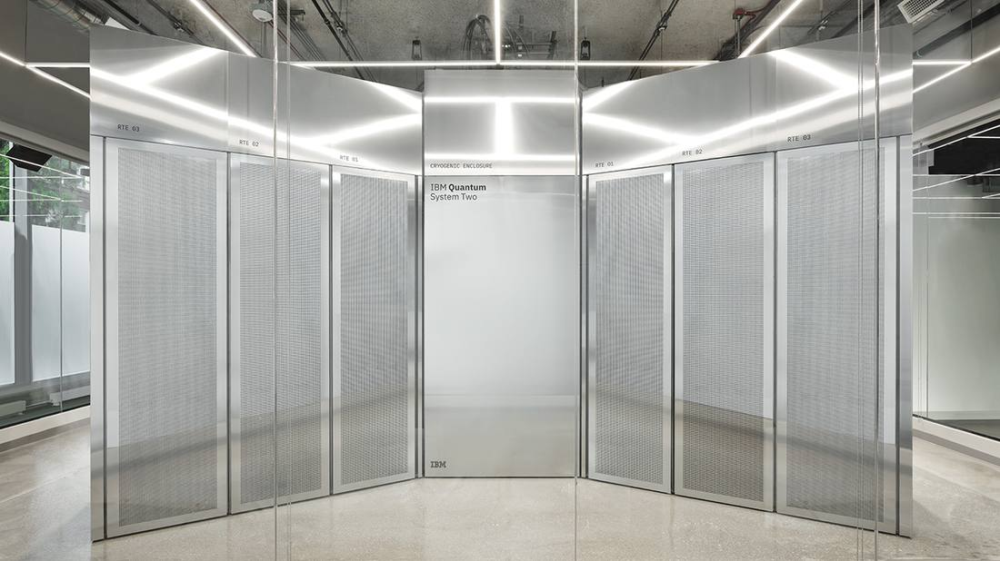

IBM Unveils Quantum System Two in Chicago, Its Most Advanced Computer Yet, Powered by Nighthawk
IBM unveiled its most advanced quantum computer, IBM Quantum System Two, in Chicago on November 6, 2026, the company's first system in Illinois, now running at the University of Chicago's Hyde Park Labs. Powered by the Nighthawk chip, 120 qubits linked through 218 tunable couplers, it anchors the National Quantum Algorithm Center and will move to the Illinois Quantum and Microelectronics Park when complete; the state backed the deployment with a $25 million grant, and IBM's FutureNow Chicago center is set to bring 750 jobs.

- 01THE PRINT — IBM unveiled Quantum System Two in Chicago on November 6, 2026, its first quantum computer in Illinois and its most advanced system, now operational at the University of Chicago's Hyde Park Labs.
- 02THE DRIVER — The system runs on the Nighthawk chip, 120 qubits through 218 tunable couplers, and anchors the National Quantum Algorithm Center, backed by a $25 million state grant and a 750-job FutureNow center.
- 03THE WATCHPOINT — Whether the Grand Challenge programs in drug discovery and grid optimization deliver results beyond classical methods, and whether the system draws research and startups to the Illinois Quantum and Microelectronics Park as it is built.
WHAT HAPPENEDWhat Happened
IBM, the University of Chicago, the State of Illinois and the Illinois Quantum and Microelectronics Park unveiled an IBM Quantum System Two in Chicago on November 6, 2026, the company's first quantum computer in Illinois and the most advanced system it offers. The system is now operational at Hyde Park Labs, a research building at 5207 S. Harper Ave. hosted by the University of Chicago, and will move to a permanent home at the Illinois Quantum and Microelectronics Park once that campus is complete.
The machine is powered by IBM Quantum Nighthawk, which IBM describes as the most powerful quantum chip it has ever built. Nighthawk connects 120 qubits through 218 tunable couplers in a square lattice, linking each qubit to its four nearest neighbors. The denser connectivity lets users run more complex circuits than IBM's previous processor while keeping error rates low, according to the University of Chicago's report.
The system anchors the National Quantum Algorithm Center, established in 2024 by Governor JB Pritzker with IBM as a leading member, where researchers from universities, national laboratories, startups and industry work alongside IBM scientists on algorithms and applications. The State supported the deployment through a $25 million grant to the University of Illinois Board of Trustees on behalf of the park. Passersby can see the system through street-level windows facing Harper Avenue.
WHY IT MATTERSA showcase system that is also a working research machine
The Chicago deployment is IBM's first quantum computer in Illinois and the anchor of the National Quantum Algorithm Center, which puts the hardware where the algorithms are being built rather than in a remote data center. Grand Challenge participants are already using the center: Deloitte and AbbVie are working with IBM and Northwestern University on quantum molecular simulation for drug discovery, while EPRI and the University of Illinois Urbana-Champaign are exploring quantum optimization for more efficient power grids. Fermilab is using IBM systems in Illinois to accelerate high-energy physics research and distributed quantum computing.
The Nighthawk chip is the technical core of the story. Its 120 qubits and 218 tunable couplers in a square lattice give researchers denser connectivity for more complex circuits, the kind of hardware step that matters for quantum-centric supercomputing, where quantum and classical resources are combined to do what neither can do alone. In July, IBM and University of Chicago researchers demonstrated quantum advantage over leading classical methods on a task the quantum computer finished in about 15 minutes while many classical approaches faced prohibitive runtimes.
WHY IT MATTERSIllinois is buying a quantum economy, not just a machine
The unveiling is the visible centerpiece of a years-long state investment. The system will move to the Illinois Quantum and Microelectronics Park, a first-of-its-kind campus under construction in Chicago, and IBM announced earlier this year it would establish a FutureNow Chicago center at the park, bringing 750 jobs across AI, cybersecurity, data science and quantum computing. IBM is helping City Colleges of Chicago design an apprenticeship program and has committed to hiring one-third of qualified graduates.
The partnership behind the machine runs deep: in 2023, at the G7 Summit in Japan, the University of Chicago, IBM and the University of Tokyo launched a 10-year, $100 million initiative to develop blueprints for a quantum-centric supercomputer powered by 100,000 qubits. Since 2023 the partners have also worked with universities in Japan and South Korea to prepare 40,000 students for quantum computing careers over the next decade. The Chicago system turns that partnership into hardware the public can see through a window on Harper Avenue.
SIGNAL JUDGMENT — ANALYSISIBM's most advanced quantum computer is now a public landmark in Chicago
Tokenta Signal's judgment: the Chicago unveiling is less a product launch than a statement of intent. Nighthawk's 120 qubits and denser coupler lattice are a real hardware step, and the July quantum advantage demonstration gives the system a results record to point to. The larger bet is geographic: Illinois is assembling the full stack, hardware, algorithm center, workforce pipeline and startup accelerator, in one place, with $25 million of state money and 750 promised jobs behind it. The watchpoint is whether the Grand Challenge work in drug discovery and grid optimization produces results that outrun the classical competition, because a showcase machine that stays a showcase does not move the field.
WHAT REMAINS UNCERTAINWhat Remains Uncertain
EVIDENCEEvidence
IBM's official release, issued November 6, 2026 and read in full: IBM Quantum System Two unveiled in Chicago, the company's first quantum computer in Illinois and its most advanced system available, initially located at Hyde Park Labs and hosted by the University of Chicago, powered by IBM Quantum Nighthawk, the most powerful quantum chip IBM has ever built; the system anchors the National Quantum Algorithm Center and will ultimately move to the Illinois Quantum and Microelectronics Park; the State supported deployment through a $25 million grant to the University of Illinois Board of Trustees on behalf of the park; NQAC Grand Challenge participants Deloitte and AbbVie working with IBM and Northwestern University on quantum molecular simulation for drug discovery, and EPRI and the University of Illinois Urbana-Champaign on quantum optimization for power grids; Fermilab working with IBM on high-energy physics and distributed quantum computing; IBM's FutureNow Chicago center at the park to bring 750 jobs across AI, cybersecurity, data science and quantum computing. The University of Chicago's same-day report agrees on the system, the chip, the location and the partnership details, and adds that Nighthawk connects 120 qubits through 218 tunable couplers in a square lattice, linking each qubit to its four nearest neighbors.
PRIMARY SOURCESPrimary Sources
- IBM: IBM Unveils Its Most Advanced Quantum Computer in Chicago, Marking a Milestone for Illinois's Quantum Future
https://www.prnewswire.co.uk/news-releases/ibm-unveils-its-most-advanced-quantum-computer-in-chicago-marking-a-milestone-for-illinoiss-quantum-future-302932376.html - University of Chicago: IBM's most advanced quantum computer unveiled at UChicago's Hyde Park Labs
https://news.uchicago.edu/story/ibms-most-advanced-quantum-computer-unveiled-uchicagos-hyde-park-labs - Illinois Governor's Office: Gov. Pritzker Unveils IBM's Quantum System Two Computer
https://gov-pritzker-newsroom.prezly.com/gov-pritzker-unveils-ibms-quantum-system-two-computer
RELATEDRelated Intelligence
- Microsoft 365 Outage Passes 21 Hours as 14:00 UTC Update Reports Email Queues Nearing Normal
- Microsoft 365 Outage Passes 20 Hours as 12:58 UTC Update Reports Broader Recovery in North America
- Microsoft 365 Outage Passes 19 Hours as 12:00 UTC Update Reports Encouraging Recovery Progress in Europe
- Microsoft 365 Outage Passes 18 Hours as 11:01 UTC Update Reports Recovery Completed in Parts of Asia Pacific